2025 Higher Biology - Paper 1 questions
Source: Scottish Qualifications Authority (SQA) / Qualifications Scotland. This is a StemInteract HTML companion, not an official HTML edition. Selectable text is supplied alongside original page images. Use the images or original PDF for equations, powers, fractions, vector notation, tables and diagrams; text extraction cannot fully preserve mathematical layout.
Jump to a question
PDF page 1
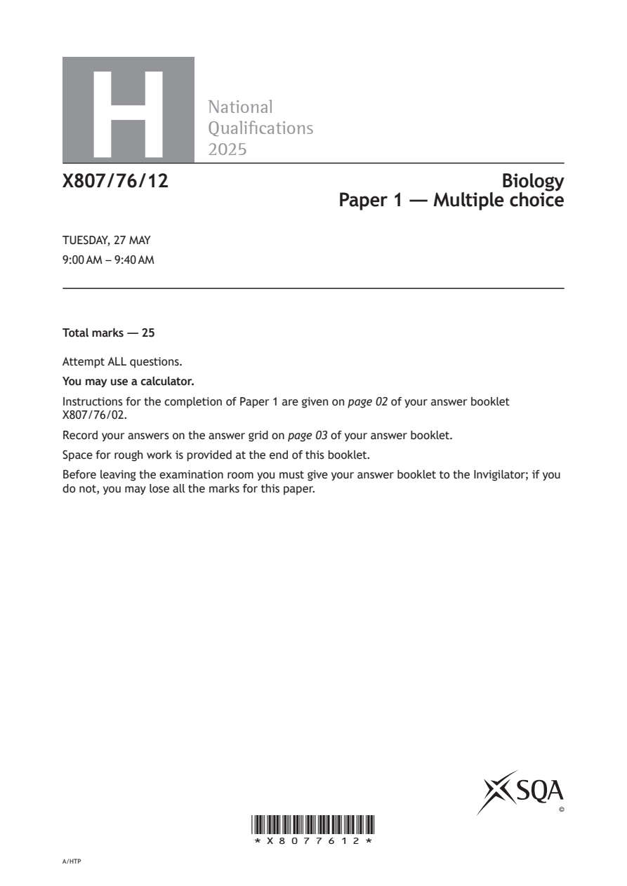
Selectable page text
H
National
Qualications
2025
X807/76/12 Biology
Paper 1 — Multiple choice
TUESDAY, 27 MAY
9:00 AM – 9:40 AM
Total marks — 25
Attempt ALL questions.
You may use a calculator.
Instructions for the completion of Paper 1 are given on page 02 of your answer booklet
X807/76/02.
Record your answers on the answer grid on page 03 of your answer booklet.
Space for rough work is provided at the end of this booklet.
Before leaving the examination room you must give your answer booklet to the Invigilator; if you
do not, you may lose all the marks for this paper.
©
*X8077612*
A/HTPPDF page 2
Paper 1, Question 1Paper 1, Question 2Paper 1, Question 3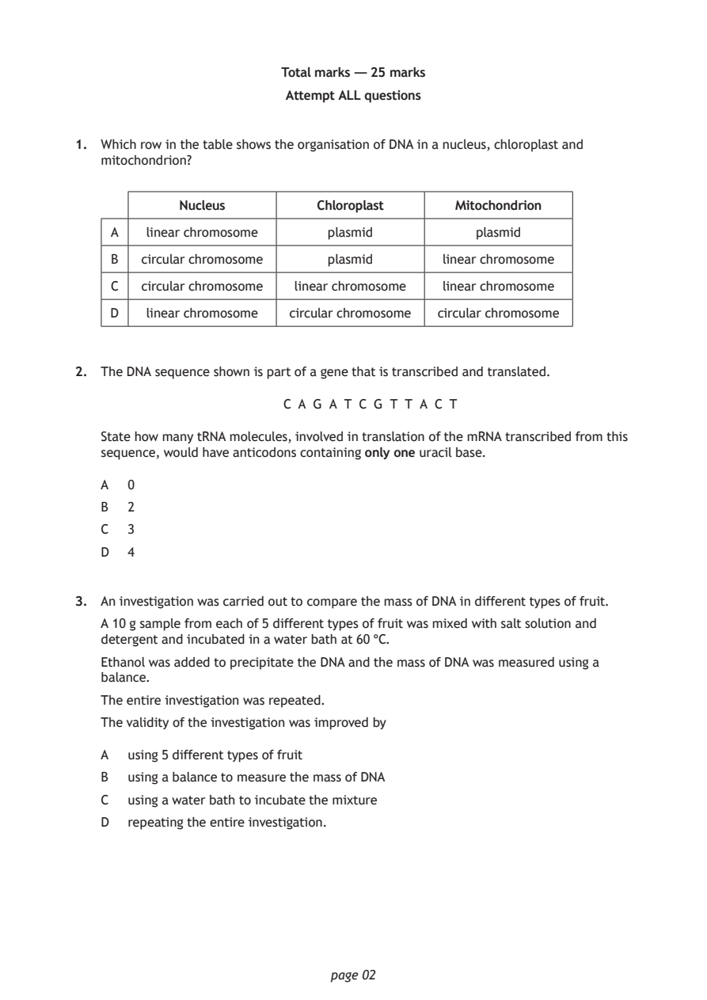
Selectable page text
Total marks — 25 marks
Attempt ALL questions
1. Which row in the table shows the organisation of DNA in a nucleus, chloroplast and
mitochondrion?
Nucleus Chloroplast Mitochondrion
A linear chromosome plasmid plasmid
B circular chromosome plasmid linear chromosome
C circular chromosome linear chromosome linear chromosome
D linear chromosome circular chromosome circular chromosome
2. The DNA sequence shown is part of a gene that is transcribed and translated.
C A G A T C G T T A C T
State how many tRNA molecules, involved in translation of the mRNA transcribed from this
sequence, would have anticodons containing only one uracil base.
A 0
B 2
C 3
D 4
3. An investigation was carried out to compare the mass of DNA in different types of fruit.
A 10 g sample from each of 5 different types of fruit was mixed with salt solution and
detergent and incubated in a water bath at 60 °C.
Ethanol was added to precipitate the DNA and the mass of DNA was measured using a
balance.
The entire investigation was repeated.
The validity of the investigation was improved by
A using 5 different types of fruit
B using a balance to measure the mass of DNA
C using a water bath to incubate the mixture
D repeating the entire investigation.
page 02PDF page 3
Paper 1, Question 4Paper 1, Question 5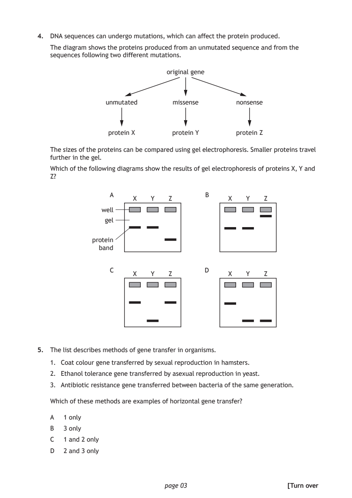
Selectable page text
4. DNA sequences can undergo mutations, which can affect the protein produced.
The diagram shows the proteins produced from an unmutated sequence and from the
sequences following two different mutations.
original gene
unmutated missense nonsense
protein X protein Y protein Z
The sizes of the proteins can be compared using gel electrophoresis. Smaller proteins travel
further in the gel.
Which of the following diagrams show the results of gel electrophoresis of proteins X, Y and
Z?
A B
X Y Z X Y Z
well
gel
protein
band
C D
X Y Z X Y Z
5. The list describes methods of gene transfer in organisms.
1. Coat colour gene transferred by sexual reproduction in hamsters.
2. Ethanol tolerance gene transferred by asexual reproduction in yeast.
3. Antibiotic resistance gene transferred between bacteria of the same generation.
Which of these methods are examples of horizontal gene transfer?
A 1 only
B 3 only
C 1 and 2 only
D 2 and 3 only
page 03 [Turn overPDF page 4
Paper 1, Question 6Paper 1, Question 7Paper 1, Question 8Paper 1, Question 9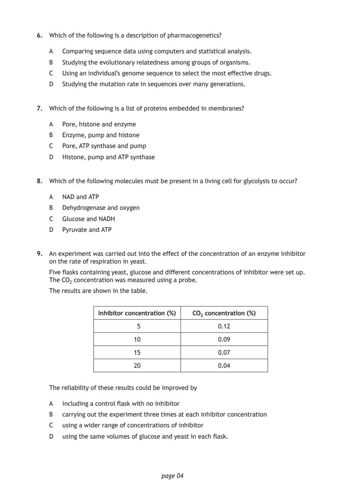
Selectable page text
6. Which of the following is a description of pharmacogenetics?
A Comparing sequence data using computers and statistical analysis.
B Studying the evolutionary relatedness among groups of organisms.
C Using an individual’s genome sequence to select the most effective drugs.
D Studying the mutation rate in sequences over many generations.
7. Which of the following is a list of proteins embedded in membranes?
A Pore, histone and enzyme
B Enzyme, pump and histone
C Pore, ATP synthase and pump
D Histone, pump and ATP synthase
8. Which of the following molecules must be present in a living cell for glycolysis to occur?
A NAD and ATP
B Dehydrogenase and oxygen
C Glucose and NADH
D Pyruvate and ATP
9. An experiment was carried out into the effect of the concentration of an enzyme inhibitor
on the rate of respiration in yeast.
Five flasks containing yeast, glucose and different concentrations of inhibitor were set up.
The CO₂ concentration was measured using a probe.
The results are shown in the table.
Inhibitor concentration (%) CO₂ concentration (%)
5 0.12
10 0.09
15 0.07
20 0.04
The reliability of these results could be improved by
A including a control flask with no inhibitor
B carrying out the experiment three times at each inhibitor concentration
C using a wider range of concentrations of inhibitor
D using the same volumes of glucose and yeast in each flask.
page 04PDF page 5
Paper 1, Question 10Paper 1, Question 11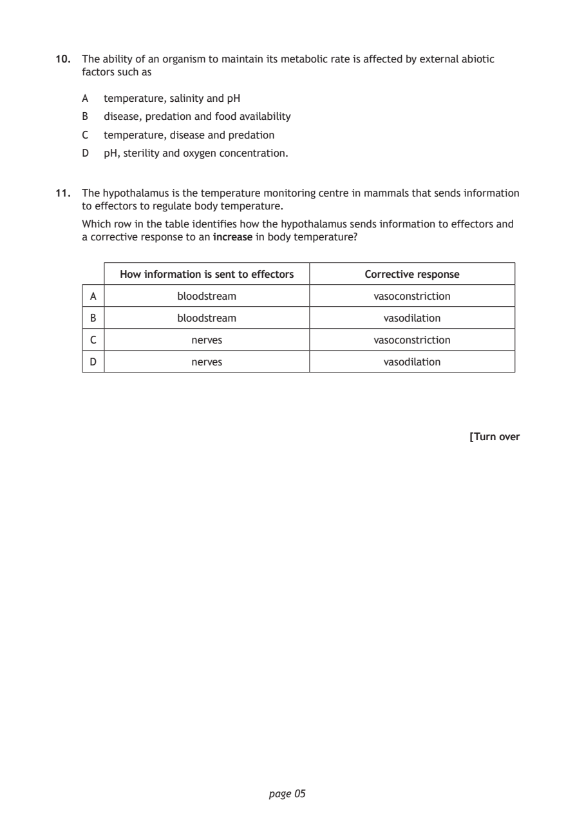
Selectable page text
10. The ability of an organism to maintain its metabolic rate is affected by external abiotic
factors such as
A temperature, salinity and pH
B disease, predation and food availability
C temperature, disease and predation
D pH, sterility and oxygen concentration.
11. The hypothalamus is the temperature monitoring centre in mammals that sends information
to effectors to regulate body temperature.
Which row in the table identifies how the hypothalamus sends information to effectors and
a corrective response to an increase in body temperature?
How information is sent to effectors Corrective response
A bloodstream vasoconstriction
B bloodstream vasodilation
C nerves vasoconstriction
D nerves vasodilation
[Turn over
page 05PDF page 6
Paper 1, Question 12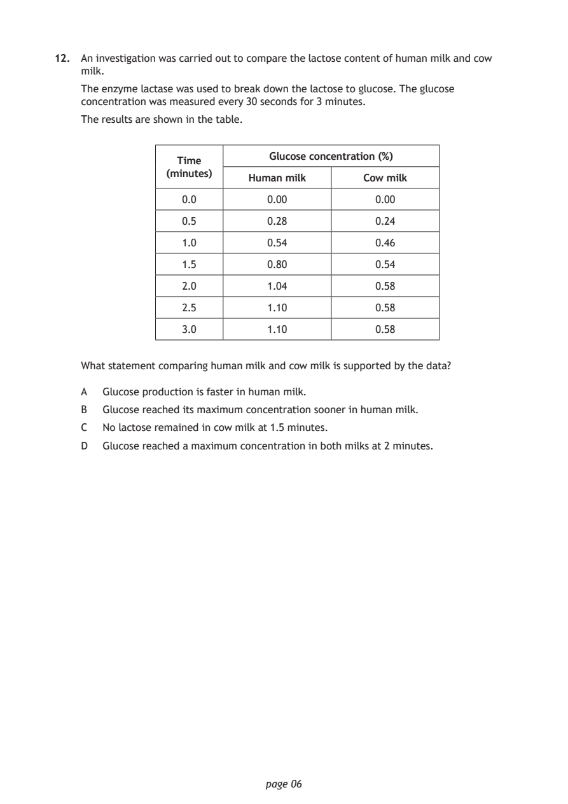
Selectable page text
12. An investigation was carried out to compare the lactose content of human milk and cow
milk.
The enzyme lactase was used to break down the lactose to glucose. The glucose
concentration was measured every 30 seconds for 3 minutes.
The results are shown in the table.
Glucose concentration (%)
Time
(minutes)
Human milk Cow milk
0.0 0.00 0.00
0.5 0.28 0.24
1.0 0.54 0.46
1.5 0.80 0.54
2.0 1.04 0.58
2.5 1.10 0.58
3.0 1.10 0.58
What statement comparing human milk and cow milk is supported by the data?
A Glucose production is faster in human milk.
B Glucose reached its maximum concentration sooner in human milk.
C No lactose remained in cow milk at 1.5 minutes.
D Glucose reached a maximum concentration in both milks at 2 minutes.
page 06PDF page 7
Paper 1, Question 13Paper 1, Question 14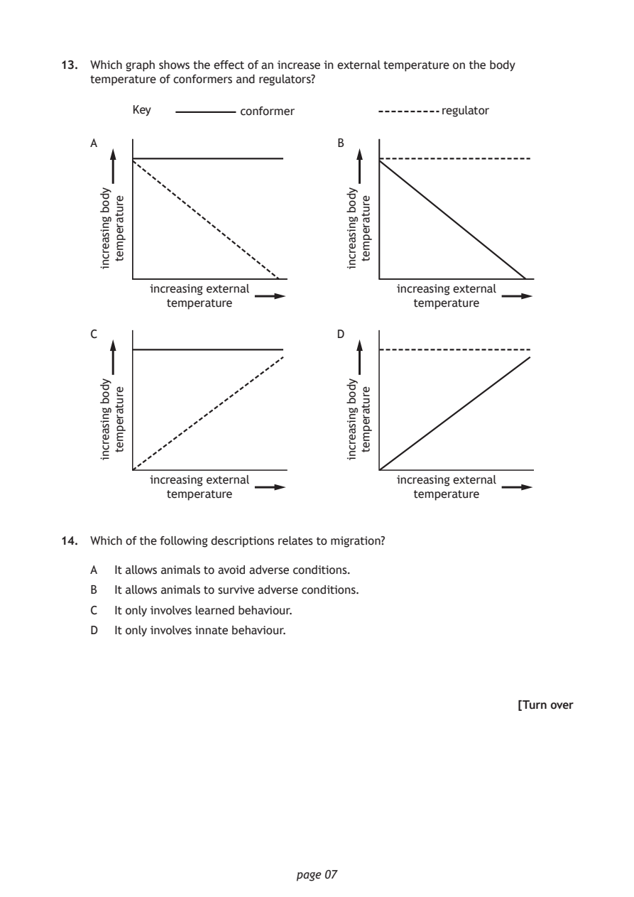
Selectable page text
13. Which graph shows the effect of an increase in external temperature on the body
temperature of conformers and regulators?
conformer
A B
increasing external increasing external
temperature temperature
page 07
ydob
gnisaercni
ydob
gnisaercni
erutarepmet
erutarepmet
ydob
gnisaercni
ydob
gnisaercni
erutarepmet
erutarepmet
Key regulator
C D
increasing external increasing external
temperature temperature
14. Which of the following descriptions relates to migration?
A It allows animals to avoid adverse conditions.
B It allows animals to survive adverse conditions.
C It only involves learned behaviour.
D It only involves innate behaviour.
[Turn overPDF page 8
Paper 1, Question 15Paper 1, Question 16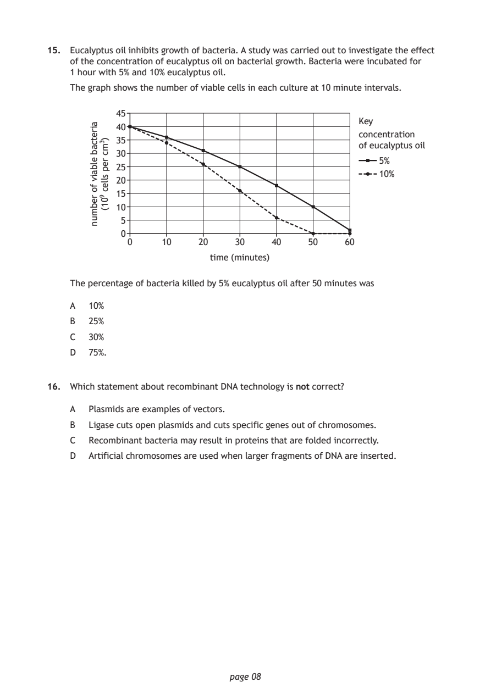
Selectable page text
15. Eucalyptus oil inhibits growth of bacteria. A study was carried out to investigate the effect
of the concentration of eucalyptus oil on bacterial growth. Bacteria were incubated for
1 hour with 5% and 10% eucalyptus oil.
The graph shows the number of viable cells in each culture at 10 minute intervals.
Key
concentration
of eucalyptus oil
time (minutes)
page 08
airetcab
elbaiv
fo
rebmun
)3mc
rep
sllec
901(
45
40
35
30
5%
25
10%
20
15
10
5
0
0 10 20 30 40 50 60
The percentage of bacteria killed by 5% eucalyptus oil after 50 minutes was
A 10%
B 25%
C 30%
D 75%.
16. Which statement about recombinant DNA technology is not correct?
A Plasmids are examples of vectors.
B Ligase cuts open plasmids and cuts specific genes out of chromosomes.
C Recombinant bacteria may result in proteins that are folded incorrectly.
D Artificial chromosomes are used when larger fragments of DNA are inserted.PDF page 9
Paper 1, Question 17Paper 1, Question 18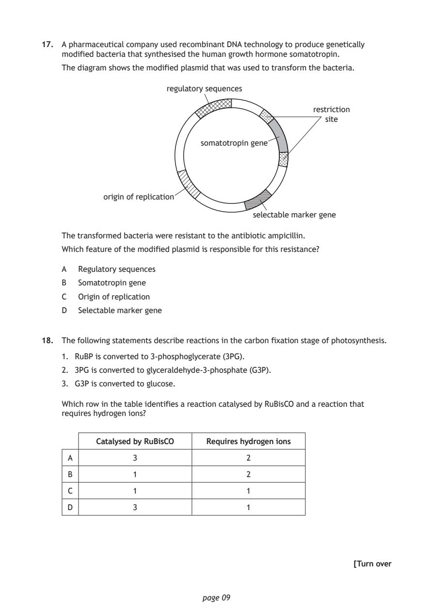
Selectable page text
17. A pharmaceutical company used recombinant DNA technology to produce genetically
modified bacteria that synthesised the human growth hormone somatotropin.
The diagram shows the modified plasmid that was used to transform the bacteria.
regulatory sequences
restriction
site
somatotropin gene
origin of replication
selectable marker gene
The transformed bacteria were resistant to the antibiotic ampicillin.
Which feature of the modified plasmid is responsible for this resistance?
A Regulatory sequences
B Somatotropin gene
C Origin of replication
D Selectable marker gene
18. The following statements describe reactions in the carbon fixation stage of photosynthesis.
1. RuBP is converted to 3-phosphoglycerate (3PG).
2. 3PG is converted to glyceraldehyde-3-phosphate (G3P).
3. G3P is converted to glucose.
Which row in the table identifies a reaction catalysed by RuBisCO and a reaction that
requires hydrogen ions?
Catalysed by RuBisCO Requires hydrogen ions
A 3 2
B 1 2
C 1 1
D 3 1
[Turn over
page 09PDF page 10
Paper 1, Question 19Paper 1, Question 20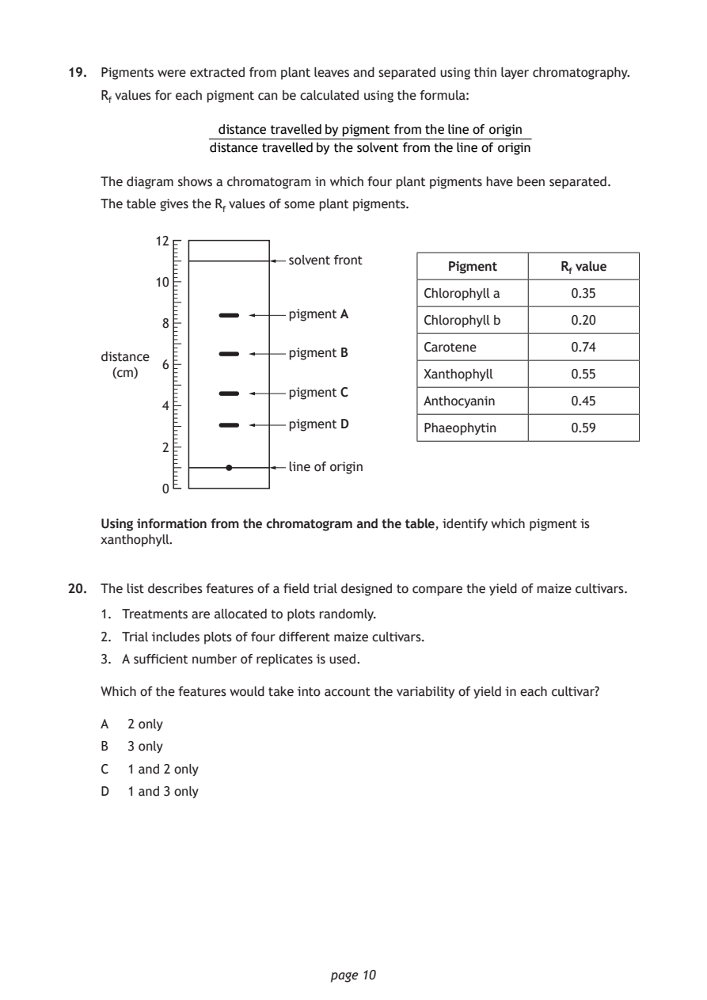
Selectable page text
19. Pigments were extracted from plant leaves and separated using thin layer chromatography.
R_{f} values for each pigment can be calculated using the formula:
distance travelledbypigment fromthelineof origin
distance travelledby the solvent fromthelineof origin
The diagram shows a chromatogram in which four plant pigments have been separated.
The table gives the R_{f} values of some plant pigments.
12
solvent front
Pigment R_{f} value
10
Chlorophyll a 0.35
pigment A
8 Chlorophyll b 0.20
Carotene 0.74
pigment B
distance
6
(cm) Xanthophyll 0.55
pigment C
Anthocyanin 0.45
4
pigment D
Phaeophytin 0.59
2
line of origin
0
Using information from the chromatogram and the table, identify which pigment is
xanthophyll.
20. The list describes features of a field trial designed to compare the yield of maize cultivars.
1. Treatments are allocated to plots randomly.
2. Trial includes plots of four different maize cultivars.
3. A sufficient number of replicates is used.
Which of the features would take into account the variability of yield in each cultivar?
A 2 only
B 3 only
C 1 and 2 only
D 1 and 3 only
page 10PDF page 11
Paper 1, Question 21Paper 1, Question 22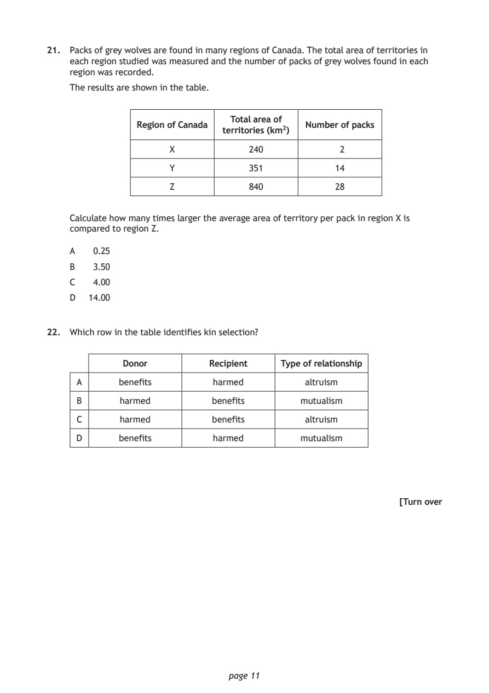
Selectable page text
21. Packs of grey wolves are found in many regions of Canada. The total area of territories in
each region studied was measured and the number of packs of grey wolves found in each
region was recorded.
The results are shown in the table.
Total area of
Region of Canada Number of packs
territories (km²)
X 240 2
Y 351 14
Z 840 28
Calculate how many times larger the average area of territory per pack in region X is
compared to region Z.
A 0.25
B 3.50
C 4.00
D 14.00
22. Which row in the table identifies kin selection?
Donor Recipient Type of relationship
A benefits harmed altruism
B harmed benefits mutualism
C harmed benefits altruism
D benefits harmed mutualism
[Turn over
page 11PDF page 12
Paper 1, Question 23Paper 1, Question 24Paper 1, Question 25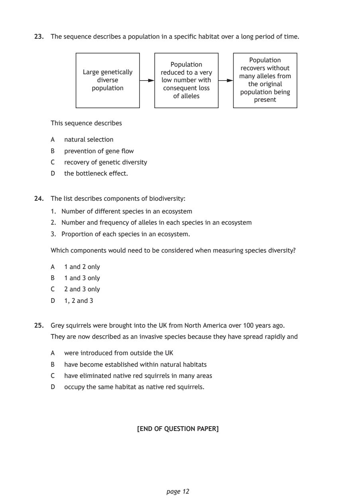
Selectable page text
23. The sequence describes a population in a specific habitat over a long period of time.
Population
Population
recovers without
Large genetically reduced to a very
many alleles from
diverse low number with
the original
population consequent loss
population being
of alleles
present
This sequence describes
A natural selection
B prevention of gene flow
C recovery of genetic diversity
D the bottleneck effect.
24. The list describes components of biodiversity:
1. Number of different species in an ecosystem
2. Number and frequency of alleles in each species in an ecosystem
3. Proportion of each species in an ecosystem.
Which components would need to be considered when measuring species diversity?
A 1 and 2 only
B 1 and 3 only
C 2 and 3 only
D 1, 2 and 3
25. Grey squirrels were brought into the UK from North America over 100 years ago.
They are now described as an invasive species because they have spread rapidly and
A were introduced from outside the UK
B have become established within natural habitats
C have eliminated native red squirrels in many areas
D occupy the same habitat as native red squirrels.
[END OF QUESTION PAPER]
page 12PDF page 13

Selectable page text
SPACE FOR ROUGH WORK
page 13PDF page 14

Selectable page text
SPACE FOR ROUGH WORK
page 14PDF page 15

Selectable page text
[BLANK PAGE]
DO NOT WRITE ON THIS PAGE
page 15PDF page 16

Selectable page text
[BLANK PAGE]
DO NOT WRITE ON THIS PAGE
page 16